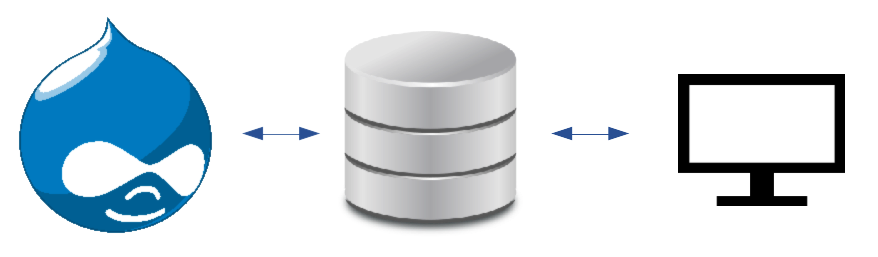

Caching Large Navigation Menus in Drupal
Benji Fisher
March 19, 2020
Before We Get Started
Push the Big, Red Button!
Follow along
This just in
Fixed last week (8.9.x and 9.0.x): BookManager::buildItems() is slow because it loads nodes
I am pretty sure that I need both the optimization in this issue and some additional caching in order to improve my page-load times. I tried using each by itself and did not find any improvement.
Ask questions
Don’t be shy!
Introduction
About Me

- Benji Fisher
- @benjifisher on d.o since 2010-01
- @benjifisher on GitHub
- @benjifisher on GitLab
- @benji17fisher on Twitter
About ???
Outline
- Before We Get Started
- Introduction
- Book Navigation Needs To Be Cached
- Internal vs. External Cache
- Twig Template
- Drupal Code
- Hook Node View (review)
- Peek At the Database
- Conclusion
Book Navigation Needs To Be Cached
Pega Community Doc Page
Numbers
- 4472 pages in the book
- 2.7 MB rendered (twice) for each page
- 40-50 sec initial load
- 6-9 sec load after caching
After I did this work, the cached page loads in 2-3 sec.
Strategy
- Use the same navigation on all pages
- Set active trail with javascript
- Cache the navigation once per book
Internal vs. External Cache
Drupal FTW
Caching is one of the strengths of Drupal 8.

Internal Cache
Drupal stores bits and pieces in database or memcache or
redis.
External Cache
Whole pages are stored in the database, Varnish, or a CDN.

The Hard Part
For both internal and external caches, the hard part is knowing when to clear the cache.
Two hard things
- Naming things
- Off-by-one errors
- Cache invalidation
Twig Template
Twig Template (simplified)
{% if tree %}
<nav class="c-book-nav" role="navigation" aria-labelledby="book-label-{{ book_id }}">
<a href="{{ book_url }}">
{{ top_book_title }}
</a>
{{ tree }}
</nav>
{% endif %}Twig Template (full)
{% if tree %}
<nav class="c-book-nav" role="navigation" aria-labelledby="book-label-{{ book_id }}">
{% if top_book_title %}
{% if not top_book_empty %}
<a href="{{ book_url }}">
{% endif %}
{{ top_book_title }}
{% if not top_book_empty %}
</a>
{% endif %}
{% endif %}
{{ tree }}
</nav>
{% endif %}Drupal Code
Hook Node View
function pdn_book_node_view(array &$build, NodeInterface $node, EntityViewDisplayInterface $display, $view_mode) {
if ($view_mode != 'full') {
return;
}
if (empty($node->book['bid']) || !empty($node->in_preview)) {
return;
}
$book_id = $node->book['bid'];
$book_node = Node::load($book_id);
if (!$book_node->access()) {
return;
}
// Cache the navigation block once for the entire book.
// We will set the active trail client-side.
$build['book_nav'] = [
'#theme' => 'book_nav',
'#book_id' => $book_id,
'#weight' => 100,
'#cache' => [
'keys' => ['pdn_book_nav', $book_id],
'contexts' => ['languages'],
'tags' => ["node:$book_id"],
'max-age' => Cache::PERMANENT,
],
];
}Hook Theme
Preprocess Function
function template_preprocess_book_nav(&$variables) {
/** @var \Drupal\book\BookManager **/
$book_manager = \Drupal::service('book.manager');
// Get the nested array (tree) of menu links.
$book_tree = $book_manager
->bookTreeAllData($variables['book_id']);
// Generate a render array from the tree of links.
$tree_output = $book_manager
->bookTreeOutput(array_shift($book_tree)['below']);
$variables['tree'] = $tree_output;
$variables['book_url'] = \Drupal::url(
'entity.node.canonical',
['node' => $variables['book_id']]
);
$book_node = Node::load($variables['book_id']);
$variables['top_book_title'] = $book_node->getTitle();
$variables['top_book_empty']
= !$book_node->hasField('field_body')
|| $book_node->get('field_body')->isEmpty();
}Javascript
Drupal.behaviors.bookNavExpand = {
attach: function attach(context) {
var bookNav = $('.c-book-nav', context);
$('a[href="' + context.location.pathname + '"]', bookNav)
.addClass('active')
.parentsUntil(bookNav, '.c-book-nav--list-expandable')
.addClass('c-book-nav--list-expanded')
.children('a')
.addClass('active');
$('.c-book-nav--list-expanded > .c-book-nav--list', context)
.once('bookNavExpandInit')
.css('display', 'block');
$('.c-book-nav--expand-arrow', context)
.once('bookNavExpandClick')
.on('click', function() {
$(this).parent().toggleClass('c-book-nav--list-expanded');
$(this).siblings('.c-book-nav--list').slideToggle();
});
}
};Hook Node View (review)
Hook Node View
Cache Keys
- A unique string to identify “our” cache
- The book ID
This is how we cache once per book.
Without cache keys, any cache data will bubble up.
Cache Contexts
If the book is viewed in another language, then the link text will change.
Maybe also the link URLs.
This site is not (yet) multilingual.
Cache Tags
These are saved in the database.
When node/$book_id is updated, delete from the
cache.
At page level, cache tags are sent in HTTP headers. Varnish/CDN invalidates based on cache tags.
Cache Max Age
Keep the cached version until I say to clear it.
Peek At the Database
The cache_render Table
mysql> DESCRIBE cache_render;
+------------+---------------+------+-----+---------+-------+
| Field | Type | Null | Key | Default | Extra |
+------------+---------------+------+-----+---------+-------+
| cid | varchar(255) | NO | PRI | | |
| data | longblob | YES | | NULL | |
| expire | int(11) | NO | MUL | 0 | |
| created | decimal(14,3) | NO | MUL | 0.000 | |
| serialized | smallint(6) | NO | | 0 | |
| tags | longtext | YES | | NULL | |
| checksum | varchar(255) | NO | | NULL | |
+------------+---------------+------+-----+---------+-------+
7 rows in set (0.01 sec)Query
mysql> SELECT cid, expire, created, tags, checksum
FROM cache_render
WHERE cid LIKE 'pdn_book%'
LIMIT 0,1\G
********************** 1. row **********************
cid: pdn_book_nav:704369:[languages]=en:[theme]=pegawww_theme:[user.permissions]=4f64d6e20026c96e963d91bab0192f9824e8cb2e9352eb4c1ca18d78478abfdb
expire: -1
created: 1543638198.782
tags: config:system.book.704369 node:704369 rendered
checksum: 12
1 row in set (0.00 sec)Cache ID
mysql> SELECT cid FROM cache_render
WHERE cid LIKE 'pdn_book%'
LIMIT 0,1\G
cid:
pdn_book_nav:704369:
[languages]=en:
[theme]=pegawww_theme:
[user.permissions]=4f64d6e20026c96e963d91bab0192f9824e8cb2e9352eb4c1ca18d78478abfdb
1 row in set (0.00 sec)- We specified
pdn_book_navin the cache keys - The book ID also comes from cache keys
languagescomes from cache contextsthemeandpermissions… see below
Cache Max Age
Cache Tags
Permissions Hash
Where do permissions come from?
See sites/default/services.yml:
parameters:
renderer.config:
# Renderer required cache contexts:
#
# The Renderer will automatically associate these cache
# contexts with every render array, hence varying every
# render array by these cache contexts.
#
# @default ['languages:language_interface', 'theme', 'user.permissions']
required_cache_contexts:
- 'languages:language_interface'
- 'theme'
- 'user.permissions'Conclusion
Outline
- Before We Get Started
- Introduction
- Book Navigation Needs To Be Cached
- Internal vs. External Cache
- Twig Template
- Drupal Code
- Hook Node View (review)
- Peek At the Database
- Conclusion
Questions
Thanks for listening!
Any questions?
Feedback
Please provide your feedback!
MidCamp Contribution Day
Contribution Day
Saturday 10am to 4pm
You do not have to know how to code to give back!
New Contributor training 10am to Noon with AnyJune Hineline of Kanopi Studios
Copyleft

This slide deck by
Benji
Fisher is licensed under a
Creative
Commons Attribution-ShareAlike 4.0 International License.
Based on a work at
https://gitlab.com/benjifisher/slide-decks.